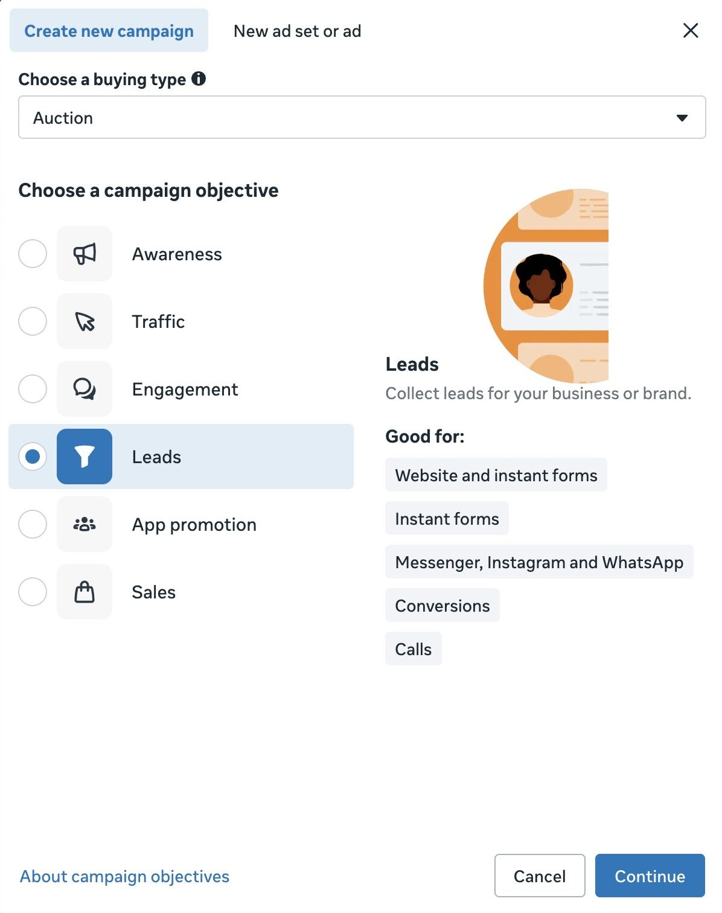
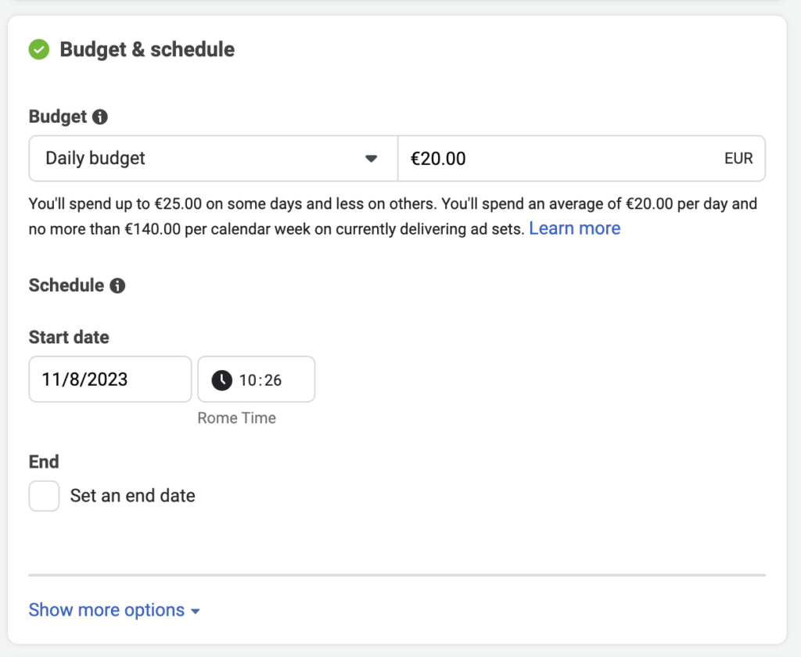
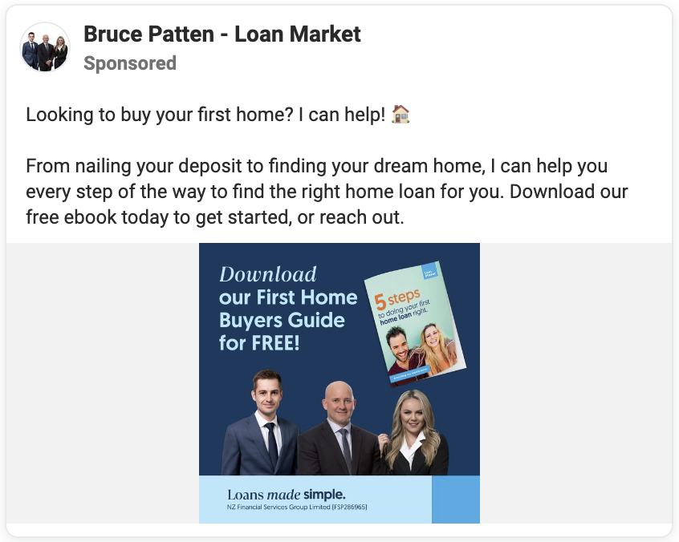
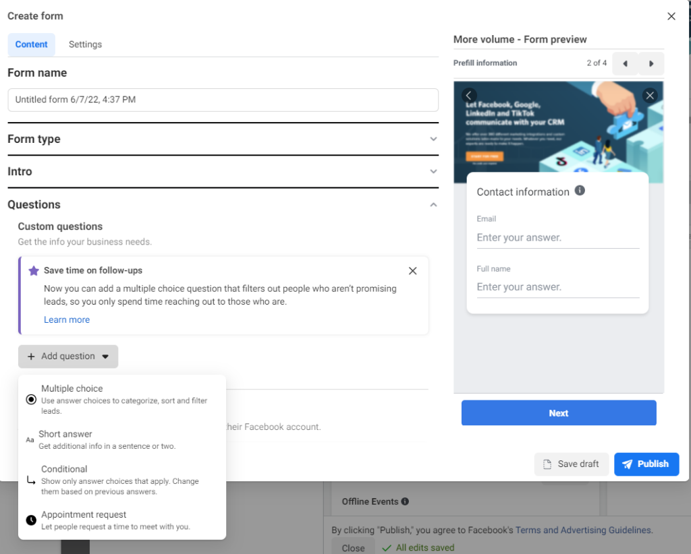
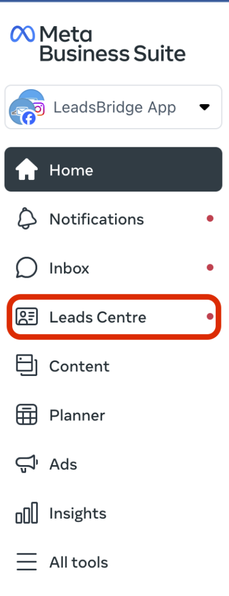

Everything in this act comes from people who spent millions on Meta ads and published their numbers.
The frame
A machine that turns $1 into $2
"It's basically a machine. I want to put $1 in and I want $2 to come out." Davie Fogarty, after US$100M of his own money on Meta ads
You control two inputs: the settings (tonight we copy the proven ones) and the message (tonight AI drafts it, you make it true)
The machine runs while you're with clients, at dinner, asleep
Nobody here needs to become a marketer. You need to assemble a machine once, then check it 10 minutes a day.
The pipeline
Strangers to clients, four stops
Stranger scrolls past your ad. Most keep scrolling. The right ones stop.
Lead: they trade name and phone number for your free guide
Appointment: your fast follow-up turns the form-fill into a 15-minute chat
Client: 1 to 3 months later, at the pace financial decisions actually move
Each act tonight builds one stop. By the end, the pipe is connected.
The objection
"My clients aren't scrolling Facebook"
A US advisor's campaign, published numbers: 452 leads at US$5.30 each on $100/day
The people who booked averaged US$495,000 in investable assets
The single biggest lead held US$2.3 million
Wealthy people scroll like everyone else. The only question is whose ad they stop on.
The alternative
Bought leads are rented. This machine you own.
$20-50
what a lead reseller pays to generate one lead with ads
$200-500
what they resell that same lead to an advisor for
1 in 10
how many bought leads advisors actually reach on the phone
$2,000
the true cost per real conversation once you do that math
Yours
the machine you build tonight generates the same lead for the $20-50, and the list belongs to you forever
Calibration
What the pros pay
US$5.30
cost per lead in the advisor case study above
US$120-350
cost per booked meeting across advisor-agency accounts
US$200-1,000
per appointment as target wealth rises, $100k minimum up to $1M+ portfolios
5x
the average return those agencies report on that spend
Your $5/day
the same machine on a training dial: same math, same levers, smaller stakes
US advisor-agency benchmarks, 2025-26 · AI Ads Launch Lab · @leotan_js
Before you spend
They Google you before they book
A seminar prospect judges your office. An online lead judges your search results.
Search your own name tonight. What a stranger sees is what every lead sees.
Minimum bar: a profile photo, a bio that says what you do, one place where reviews or testimonials live
Don't be a secret agent. If your profiles hide that you're an advisor, the ad works and the trust check fails.
ACT 2 · 50 MIN HANDS-ON
The bait
A free guide good enough that strangers trade their phone number for it. Laptops open.
The concept
Capture now, convert later
A stranger won't book a meeting from an ad. Too big an ask, too early.
They will take a free guide that solves one problem they had this week
The trade: your guide for their name and phone number. That's capture.
Convert happens later, on the phone. The ad's only job is the trade.
The method
Give away what others charge for
Look at what people in your space charge money for: courses, reviews, reports, consults
Check what it costs you to give it away as a PDF: nothing
Make a better free version of it. Count the leads. Count the meetings.
"You can give away something significantly better for free than what everyone else charges for." Alex Hormozi
The bar
Nobody downloads a 150-page ebook
"We're like: no thanks, I'll just ask ChatGPT." Shauna Thoresen, on why generic ebooks stopped converting
Free information is worthless now. Your judgment isn't.
What still converts: a deadline timeline, a checklist, a calculator, a mistakes list
Working example: "Turning 65? Three deadlines that cost you money if you miss them" - dates, penalties, what to do, one page each
The psychology
The fewer beliefs, the more yeses
Count what a stranger must believe before saying yes to your offer
"Free retirement review" needs three beliefs: reviews help, advisors can be trusted, you specifically can be
"5 CPF mistakes" needs one: "I might be making one of these"
Lower the belief count and the same ad budget pulls double the leads
Principles
What makes the bait work
One problem
the sharpest pain, even though you do more. The rest is for the call.
Specific title
says who it's for and what they get. Clever dies; clear converts.
10-minute read
consumed tonight beats impressive and unread
Insider, not googleable
deadlines, thresholds, mistakes you see weekly - things ChatGPT answers blandly
Best advice, free
held-back content reads as fluff. The generosity is the marketing.
One next step
every page points at the same door: a free 15-minute chat
Lead magnet principles · AI Ads Launch Lab · @leotan_js
The skill
Prompting is a loop, not a spell
Ask for options with a number: "give me 10". Ask vaguely and you get 5 mediocre ones.
Pick one and say which: "I like number 4". The AI builds on your choice.
Give feedback like a boss, not a fan: "keep 5 through 10, drop the rest, they're for beginners"
Output too generic? That's your prompt. Add who it's for and what you know, then go again.
Hands-on · ~8 min
Prompt 1: find the pain
I'm a financial advisor in Singapore. My clients are [WHO YOU SERVE,
e.g. working parents in their late 30s].
List 10 specific money problems they lose sleep over that a short
free guide could help with. Number them, one line each.
Then reply: "I like number X. Give me 5 guide titles for it - specific, no clever wordplay."
You picked a title. Say it to your neighbour. If they wouldn't download it, pick again.
Check your result
What a good reply looks like
Keep: specific and felt
"Worried CPF LIFE payouts won't cover monthly expenses after 65"
"Started investing late and afraid it's too late to catch up"
"No idea if their insurance policies overlap or leave gaps"
Reject: abstract and bland
"Lack of financial literacy"
"Difficulty budgeting effectively"
"Uncertainty about the future"
Same test for titles: "5 CPF Mistakes Singaporeans Make Before 40" beats "A Complete Guide to Financial Wellness"
Hands-on · ~5 min
Prompt 1b: the outline first
You're helping me write that guide: [PASTE YOUR TITLE].
Give me a 6-section outline, one line per section, ending with a
final section that invites the reader to a free 15-minute call.
Wait for my OK before writing anything.
Edit the outline in chat before saying OK: cut, reorder, add the section only you would think of
Outline approved by you, not just generated. Thumbs up.
Hands-on · ~10 min
Prompt 1c: write it print-ready
Write the full guide from that outline as ONE self-contained HTML file,
styled for print: A4, clean typography, a page break between sections.
Plain English, no jargon, 10-minute read. Use short paragraphs,
checklists and concrete numbers. End with the free 15-minute call
invitation and my contact: [NAME, PHONE].
Give it to me as a downloadable file.
Download → open in your browser → Cmd+P → Save as PDF. That's your guide.
A PDF exists on your desktop with your name in it.
The line
The AI wrote a draft. You make it true.
Read every line before it ships. You hold the licence, not the AI.
Wrong or bland? Fix it with words: "section 3 is wrong about CPF rates, rewrite it: ..."
Add one story only you could tell. That's the part no competitor can copy.
"I don't want anybody to copy and paste what the AI comes up with. You still have to do your work." Cody Burch
Hands-on · ~5 min
Prompt 1d: the cover
Create a cover image for my guide "[TITLE]".
Professional and calm, financial-planning feel, [YOUR COLOUR] as
the main colour, clean large title text, no faces, no clutter.
AI image tools often mangle text. If the title renders badly: ask for "no text on the image" and add the title yourself
This cover becomes your ad image in Act 3. One asset, two jobs.
Cover downloaded. Guide + cover = bait complete.
Checkpoint
Bait built
A guide with your name on it, made in under an hour. Break: 15 minutes. Stuck on anything? Flag me now, not at 9pm.
ACT 3 · 35 MIN
The ad
Five settings, one message; fifteen minutes of ideas, then twenty of building. Open Ads Manager in a tab now, so it's warm when we get there.
The structure
Three boxes, one instruction
Campaign: what you want. Ours: leads.
Ad set: who sees it and how much you spend. Ours: Singapore, $5-10 a day.
Ad: what they see. Ours: your cover image and AI-drafted words.
"You're basically saying to Meta: this is what I want." Ben Heath, US$200M managed spend
The trap
Meta is literal
Ask for link clicks and it finds people who click everything and buy nothing
Ask for leads and it hunts form-fillers
Objective: Leads. Every time. Awareness, Traffic, Engagement all spend your money on the wrong humans.
Same budget, different people. The objective is the single highest-stakes click tonight.
Compliance · one checkbox
The category that keeps your account alive
Campaign setup asks about Special Ad Categories. If it lists Financial products and services, that's you. Declare it.
Declaring it locks some age and gender targeting. That's fine: your copy does the targeting.
Skipping it feels clever until Meta notices: rejected ads, then the account. Bans follow the person and IP, not the account.
Don't bet on a fresh-account reset. One honest checkbox versus Meta ads, maybe forever.
Targeting
The algorithm knows before you do
Watch three spider videos tonight and tomorrow your feed is spiders. The same machine finds your future clients.
Set location: Singapore. Then stop.
Interest stacking is 2019 advice. Every restriction shrinks the pool and raises the price per lead.
Your ad copy is the real targeting: the right person stops, the wrong person scrolls, and Meta learns from both
Money
A number that stings a little
Ben Heath's budget rule: an amount you could lose without hardship, but big enough that you'll actually check the results
$5-10 a day is the training dial. The advisor agencies start clients at US$10-50.
First test: $15-30 total over 3 days. Pausable any morning. You pay per view, not per click.
Never press Boost Post: training wheels, one path, none of the controls you now understand
The message
Their problem first. Your name never.
Problem
"Retiring into a market crash can drain your savings years early."
Agitate
"Most portfolios aren't protected against it, and most people find out too late."
Solve
"My free guide shows three ways to protect yourself. Download it below."
The agencies' testing: "Worried about running out of money in retirement?" reaches about 2 in 3 readers. "Hi, I'm John from XYZ Financial" reaches almost none.
Your angle picks your leads: tax content pulls wealthier prospects, income-planning content pulls pre-retirees
Hands-on · ~5 min
Create the campaign
Ads Manager → + Create
Objective: Leads → Continue
Special Ad Categories: declare Financial products and services
Name it: "Guide leads - [month]"
You're on the Ad Set screen.

1. pick Leads
2. Continue
The objective screen. Two clicks, then the category checkbox.
Hands-on · ~5 min
The ad set: who and how much
Location: Singapore
Age, gender, interests: leave broad the category locks most of it anyway - that's expected
Daily budget: $5-10
Placements: leave Advantage+ on - Meta only spends where it converts
Budget shows your number. Audience says Singapore. Thumbs up.

The ad set screen: location and money live here.
The creative
Two sins: pixelated and boring
Your guide cover is the ad image: the promise, made visible
Sharp, bright, title readable on a phone at arm's length
Got 3 extra minutes? Ask the AI for a vertical version too - stories placements crop squares badly
Keep it PG. Fear-bait and aggressive claims get rejected, and new accounts are on probation.

A real mortgage adviser's lead ad: guide cover as image, problem-first copy, Download button. Yours in 10 minutes.
Hands-on · ~5 min
Prompt 2: the words
I'm running a Meta lead form ad for my financial advisory practice
in Singapore.
My free guide: [TITLE].
The one problem it solves: [THE PROBLEM].
My audience: [WHO IT'S FOR].
Write me:
1) Primary text (under 125 characters). Open with their problem as a
question. Never open with my name or my firm.
2) Headline (under 40 characters): the guide's name plus the word "free"
3) Description (under 30 characters)
Rules: no "guaranteed", no "100%", no income promises, no jargon.
Give me 3 variations, each with a different problem angle.
Three variations on screen. All three get used in the next step - pick the truest to lead the preview.
Hands-on · ~5 min
Assemble the ad
Upload your cover image
Primary text → the top field. Headline → the bold line. Description → the small grey one.
Paste all 3 variations: primary text and headline each take multiple options ("+ Add text option"). Meta shows each person the version they're most likely to stop on.
Button: Download. It matches the promise. Avoid "Sign Up" - it reads like commitment.
The preview looks like an ad you'd actually see, and all 3 text options are loaded.
ACT 4 · 25 MIN
The form
Where a scroller becomes a lead. Small screen, big stakes.
Why this format
The form lives inside Facebook
No website, no landing page, no developer. The form opens in-app, instantly.
Meta pre-fills their name and number: one tap to finish
Staying in-app is what Meta's auction rewards: agencies see cheaper impressions for instant forms than off-site funnels
The honest trade: more leads, rougher quality than a website funnel. At $5/day, volume to learn from wins.
Form type
More volume now, friction later
Form type: More Volume. The default that fills your diary with practice.
"Higher Intent" adds a confirm screen: fewer leads, realer ones
The upgrade rule: add friction only when calls, not lead flow, are your bottleneck
Week one is for learning. Take the volume.
Hands-on · ~10 min
Three fields and one golden question
Contact fields, exactly three: name, email, phone
Phone is the follow-up channel. Email alone gets ignored - spam filters and forgotten signups.
Add one short-answer question: "What's your biggest money worry right now?"
Nothing else. Every extra field loses finishers to a doorbell or a notification.
Form shows 3 contact fields + your question.

1. Add question
2. Short answer
The form builder. Your golden question goes in as a Short answer.
The rules
Two rules that keep the form legal
A privacy policy link is mandatory: a real webpage, not a PDF or image
No website? A one-page site holding just the policy passes. Free page builders do this in 20 minutes.
Never collect on the form: age, gender, income, NRIC. Once they're in your CRM, ask anything - on the call.
The form is Meta's turf and Meta's rules. The phone call is yours.
The exit screen
The thank-you screen sells the next 30 minutes
Copy: "Thanks! I'll WhatsApp your guide today - keep an eye on your phone."
Now your message lands expected instead of screened as spam
Button options worth knowing: View file hands the PDF over instantly; WhatsApp starts the chat in their app
Keep the form's image identical to the ad's image. A new picture reads as a wrong room, and they bail.
Hands-on · together
3... 2... 1... Publish
Preview shows: image, copy, form attached
Hit Publish. Review takes ~30 minutes, longer for brand-new accounts. Normal.
You now own a running lead machine. Most advisors never will.
ACT 5 · 25 MIN
The follow-up
Leads decay by the minute. This act is why the machine pays.
The inbox
Where your leads live
Leads Center in Meta Business Suite: every form fill, timestamped
Turn on email delivery: Meta emails you each new lead directly
Tonight's bonus wires every lead into a Google Sheet automatically
Sweep twice a day minimum: morning and evening

Leads Center: names, numbers, and their answer to your golden question.
The bar
15 to 30 minutes
The agency bar: first contact inside 15-30 minutes of the form fill
They filled 2-3 forms in one scrolling session. The first advisor in takes the meeting.
Phone-first: ring once, then WhatsApp. The missed call makes your name familiar instead of random.
No team? Twice-daily sweeps are the floor, not the plan. And they were told to expect you - the thank-you screen did that.
The Singapore rules
Fast, and clean
Their form fill is consent to get the guide and hear back about it - not to join a broadcast list
Open by identifying yourself and referencing their request. One "please stop" = stop, immediately.
Keep the lead record: the form, the date, what they asked for. That's your PDPA paper trail.
Tied advisors: your firm may require compliance sign-off on the ad and the guide. Ask before it runs, not after.
General guidance, not legal advice. Your compliance desk outranks this slide.
Hands-on · ~5 min
Prompt 3: the message, written now
A lead just filled in my Meta form for my free guide "[TITLE]".
Name: [NAME]
Their biggest money worry: [THEIR ANSWER]
Write a WhatsApp message under 80 words: warm, reference their exact
worry in the first line, attach the guide, and offer a 15-minute call
this week. No selling, no jargon.
Message template saved where you'll find it: notes app, or pinned in your own WhatsApp.
The call
What to say when they answer
Open with the magic words: "I have nothing to sell you today." Mean it.
Confirm the guide arrived, then ask about the worry they typed. Then listen.
One small ask to close: a 15-minute chat if they'd like help applying it
Educate, educate, conversation. The product waits for the meeting.
The patient ones
Most leads book on message four, not one
Day 0
the guide + one line about who you are ("think of me as the friend who reads the fine print")
Day 2
your story: why you do this work, two sentences
Day 4
proof: one client outcome or review
Day 7
one tip from the guide, expanded with something new
Day 10
soft close: "the 15-minute chat is still open this week"
Hands-on · ~4 min
Prompt 4: five messages, drafted once
Leads downloaded my free guide "[TITLE]" but haven't booked a call.
Write my 5-message WhatsApp follow-up arc, under 60 words each:
Day 0: deliver the guide + one line on who I am
Day 2: my story - why I do this work. Facts: [2 REAL FACTS ABOUT YOU]
Day 4: one client outcome, anonymised: [WHAT HAPPENED]
Day 7: expand one tip from the guide with something extra
Day 10: soft reminder that the free 15-minute chat is still open
Warm, plain English, no jargon, no selling before Day 10.
Five messages saved next to your Prompt 3 template. The whole follow-up system now exists before your first lead does.
Week 2 upgrade
When leads look fake
Wrong numbers usually aren't lies: Meta autofills from profiles that can be 15 years stale
Fix one: turn autofill off in form settings - typed numbers are current numbers
Fix two: switch to Higher Intent and enable one-time-passcode verification - every number SMS-confirmed
The price of clean: fewer leads, each one real. Upgrade only when the diary is full of dead numbers.
ACT 6 · 15 MIN
Running it
Ten minutes a day. Rules, not feelings.
The habit
Ten minutes with coffee
Sweep new leads first. Speed before analysis, every day.
Check yesterday: spend, leads, cost per lead. Numbers, not feelings.
First 48 hours: touch nothing. Every edit resets Meta's learning.
Once a week: add one fresh image or angle, retire the loser
The rules
Kill, scale, or leave it alone
Kill (really: swap)
3 days + 500 impressions + zero leads: change the image or the copy and relaunch. Edit, don't delete - deleting loses the learning.
Scale
Cost per lead good for 3 days running: raise budget 20%. Never double overnight - big jumps restart learning.
Rejected?
Remove "guaranteed", "100%", income claims. Edit, resubmit, move on. It happens to everyone.
One change at a time
Change two things and you learn nothing. Duplicate, swap one, compare.
Expectations
Slow is normal
Day 3, $15 spent, nothing booked? You're on schedule. The agencies see first appointments in week 1-2.
A lead that books this month becomes a client in 1-3 months. October leads close in December.
The case-study show rate: about 2 in 3 booked appointments turn up. For cold traffic that's good, not failure.
Lumpy months are the lag, not luck. Judge the machine by the quarter.
You're not selling $10 stickers. Nobody moves their retirement savings from one scroll.
Keep these
The operating numbers
$5-10 / day
starting budget. Don't raise it on day one.
S$3-15
a normal cost per lead in Singapore at this budget. The US$5.30 case study is the good end.
48 hours
hands off while Meta learns. Every edit resets the clock.
3 days + 500
minimum spend and impressions before judging anything
+20%
the scale step when cost per lead is good 3 days running
30 min
the contact bar. Two hours is the ceiling, not the target.
2 / day
lead sweeps, morning and evening, even on good weeks
The operating numbers · AI Ads Launch Lab · @leotan_js
Account safety
Don't get banned
Advertise from Business Manager, real name matching your ID. Turn on 2FA and add one trusted backup admin.
Pay by card, not PayPal. New Pages should post a little before advertising.
Never boost, never skip the financial category, never run "guaranteed returns"
Documented bans have followed the person and the IP for years. Don't count on a fresh-account reset.
Bonus · 10 min if time allows
Every lead in a sheet, automatically
Google Sheet with columns matching your form: name, email, phone, worry
Zapier → trigger: Facebook Lead Ads → New Leadpremium app: needs Zapier's paid plan
Connect account → pick your Page → pick your form → test pulls a sample lead
Action: Google Sheets → Create Spreadsheet Row → map each field → test → switch ON
No Zapier budget? Meta's own email delivery of leads (Act 5) is the free version of this.
Zoom out
The whole machine, one screen
Bait
one sharp problem, solved free, built with AI in an hour
Ad
$5-10/day, problem-first words, your guide cover as the image
Form
three fields plus the golden question, thank-you screen that books the callback
Follow-up
WhatsApp in 30 minutes, "nothing to sell" call, five-touch arc for the quiet ones
Operate
ten minutes a day, one change at a time, judged by the quarter
The lead machine · AI Ads Launch Lab · @leotan_js
Appendix
Quick fixes
No file from the AI
ask for the HTML in a code block, paste into a text editor, save as guide.html
Ugly PDF
you asked for a PDF. Ask for print-styled HTML instead, open it, Cmd+P, save as PDF.
Form won't save
a required field is empty - usually the privacy policy link. Still stuck? Different browser.
"In review" for hours
normal on new accounts. Don't edit - edits restart the queue. Check tomorrow.
Rejected
hunt for "guaranteed", "100%", income promises. Remove, resubmit, move on.
Can't find your leads
business.facebook.com → All tools → Leads Center. Or turn on email delivery.